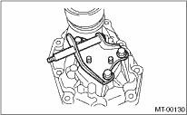
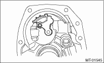

1. Press-fit the new oil seal to the extension case using the ST. 
2. Install the shift bracket to extension case.
Tightening torque:
24.5 N·m (2.5 kgf-m, 18.1 ft-lb)

3. Install the transfer drive gear to the extension case.
1. Install the oil guide to the transfer case.
Tightening torque:
6.4 N·m (0.65 kgf-m, 4.7 ft-lb)
NOTE:
Use a new installing bolt.

2. Install the reverse check sleeve assembly to the transfer case.